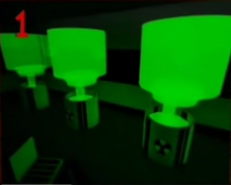

Marretão é um jogo de trabalho em equipe e uma fera. Nesse jogo temos um servidor de troca, e é dele que vamos falar.
Você acabou de ver a lista de valores mais atualizada e o significado das cores.
♦CURIOSIDADES♦
(AVISO!!!! Essas curiosidades são irrelevantes!)
1-O jogo foi criado dia 01/07/2017 (primeiro de setembro), pelo Mr.Windy.
2-Se você ir no mapa nuclear, ir em uma certa sala e ligar todos os botões, você apaga todas as luzes do mapa.
Mapa nuclear →
↓ 3-Temos alguns comandos no jogo, sendo eles: ↓
/e laugh → faz seu personagem rir
/e point → faz seu personagem apontar
/e wave → faz seu personagem acenar
/e cheer → faz seu personagem dar um pulinho
4-Você consegue desbloquear os servidores de troca chegando no nível 6.
Foi isso. Espero que você tenha gostado do site. Estarei atualizando ele quando precisar. ^ω^
Anaッ.